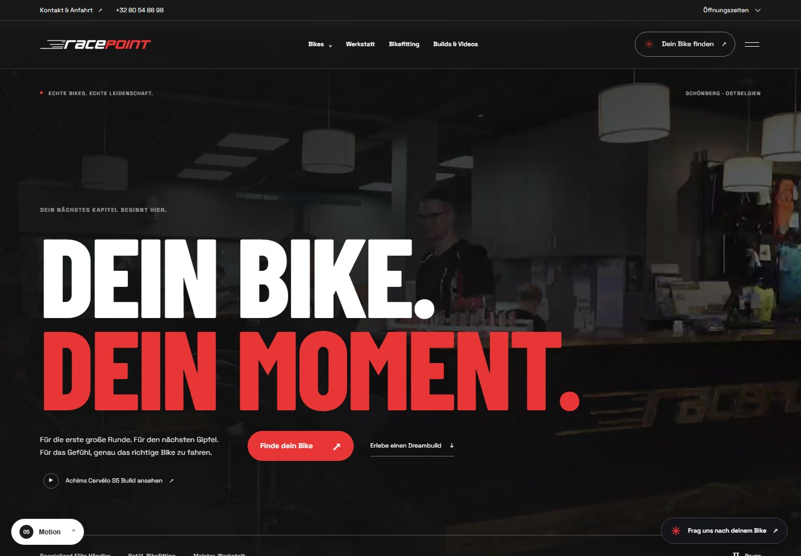
NEW16 / MotionScroll-Erlebnis
Motion
Video-Zoom, bewegte Typografie und ein Bike, das sich beim Scrollen zusammensetzt.
14 Prototypen · Neueste zuerst
Öffne einen Entwurf. Über das Zahnrad unten rechts wechselst du jederzeit zu allen anderen Prototypen oder zurück zur Übersicht.

NEWVideo-Zoom, bewegte Typografie und ein Bike, das sich beim Scrollen zusammensetzt.
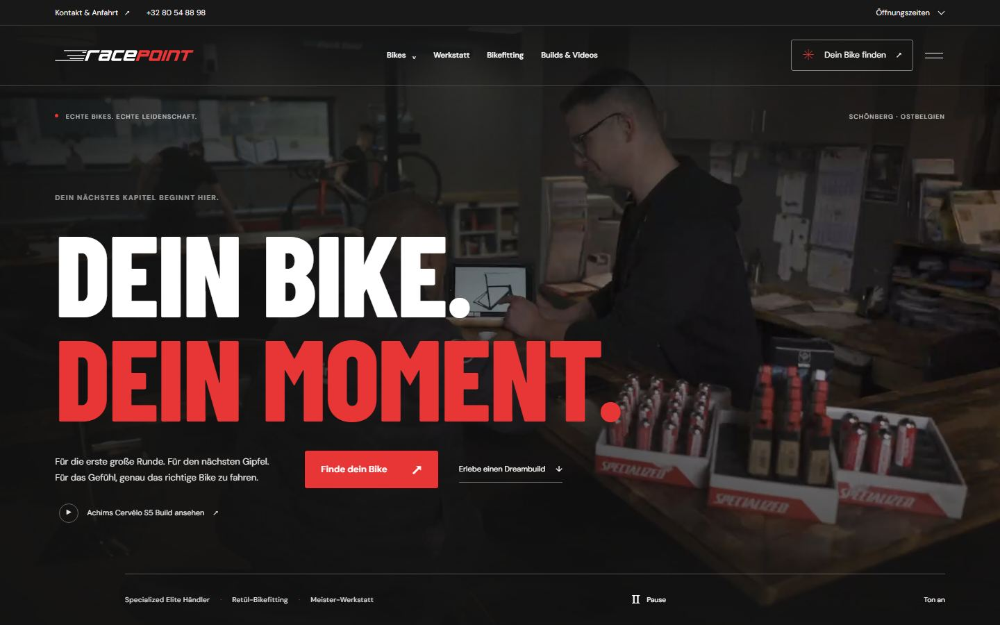
NEWGroße Videoteaser auf jeder Seite. Auf der Startseite läuft Achims Shop-Film direkt los.
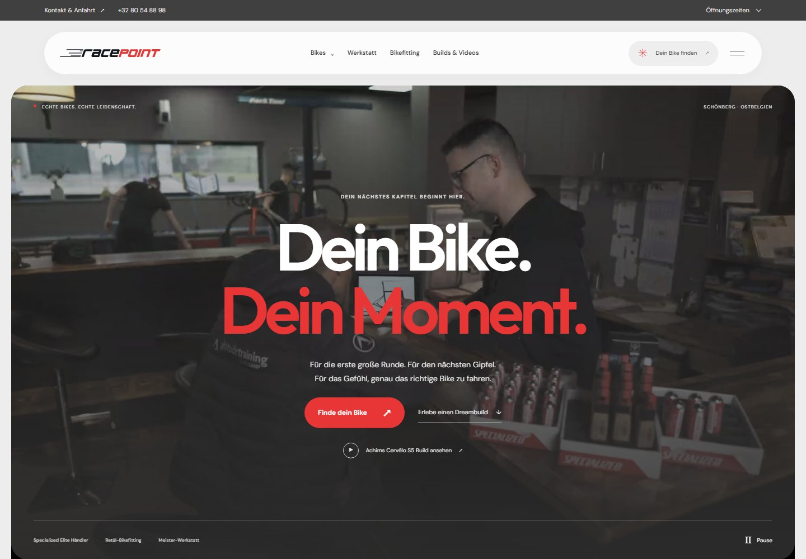
NEWGroße Bilder, weiche Formen und eine entspannte Einladung zur nächsten Tour.
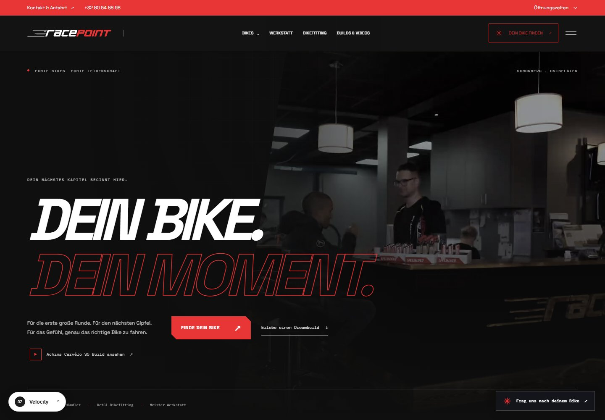
NEWDunkle Flächen, technische Details und kraftvolle Typografie in Racepoint-Rot.
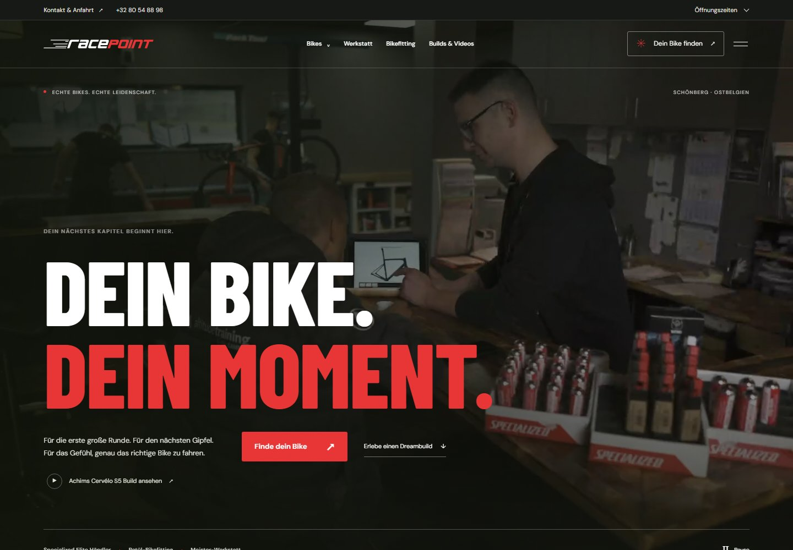
NEWUnsere aktuelle Gestaltung mit 3D-Aufbau, echten Inhalten und KI-Beratung.
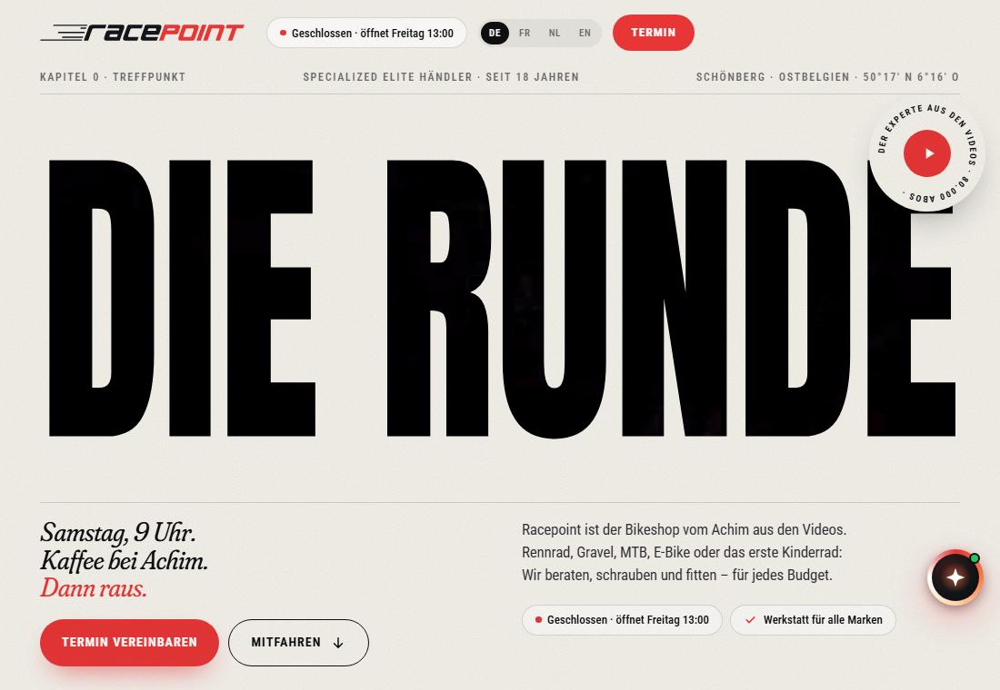
NEWEine helle Tour durch Venn, Ardennen und Eifel mit Video, Route und Höhenprofil.
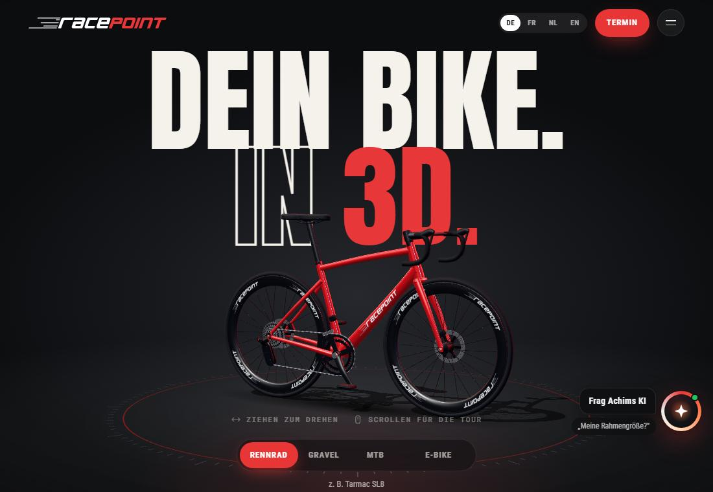
NEWEine 3D-Bühne mit Kamerafahrten und einem Konfigurator für dein Bike.
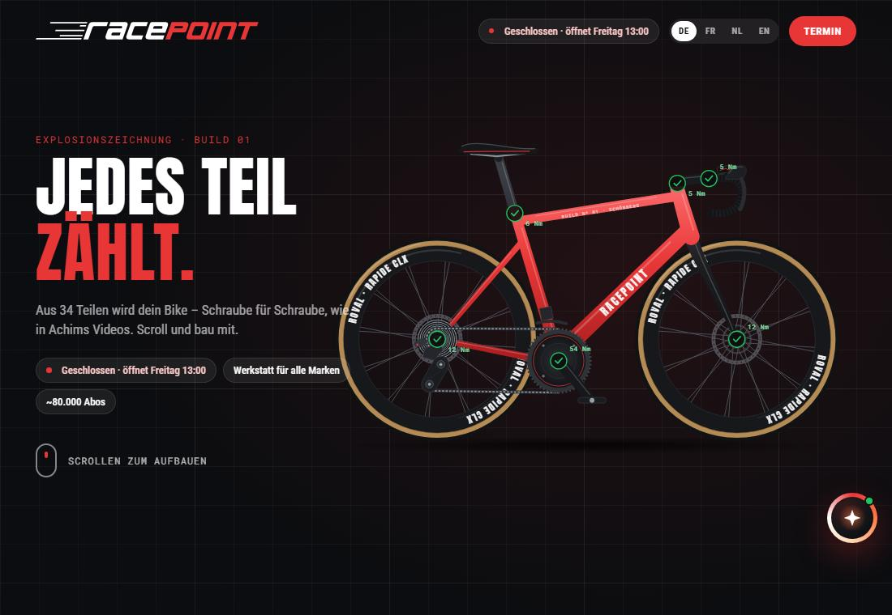
NEWEine Explosionszeichnung wird beim Scrollen zum kompletten Rennrad.
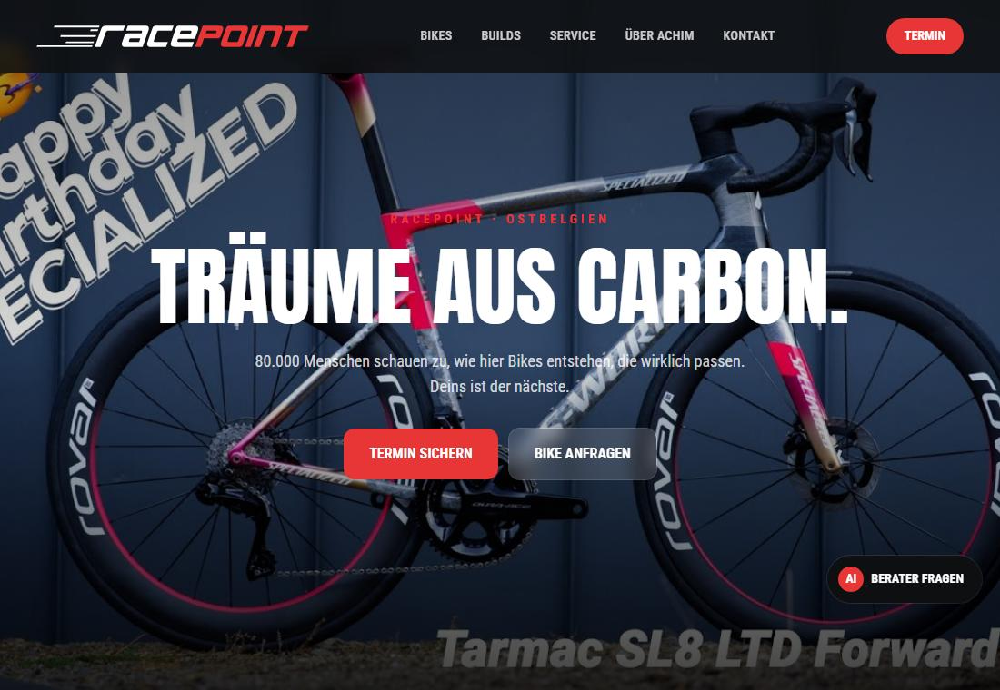
Ein bildstarker Einstieg mit Video und großzügigen Vollbild-Momenten.
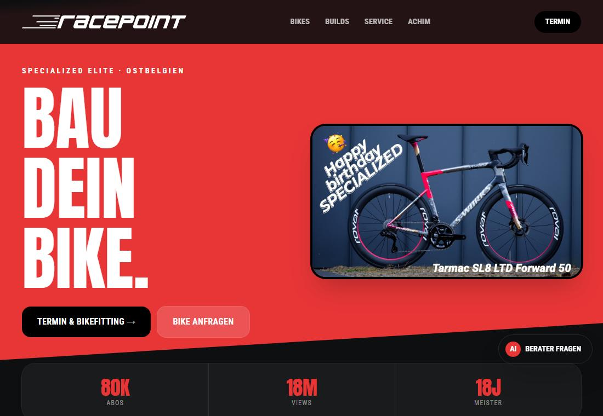
Kraftvolle Schrift, markante Formen und ein sportlicher Auftritt.
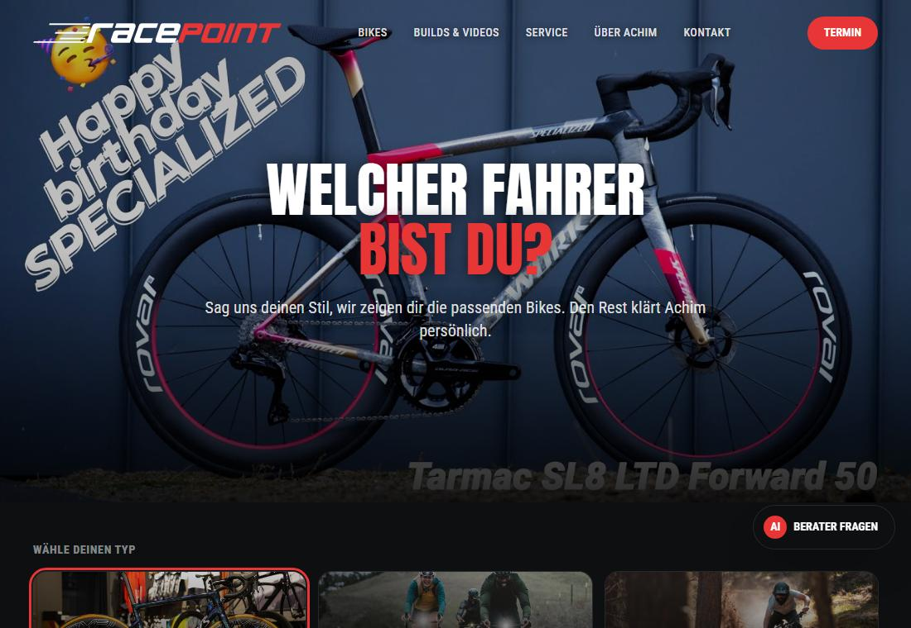
Vom Videoeinstieg zur Kategorie-Auswahl und den passenden Bikes.
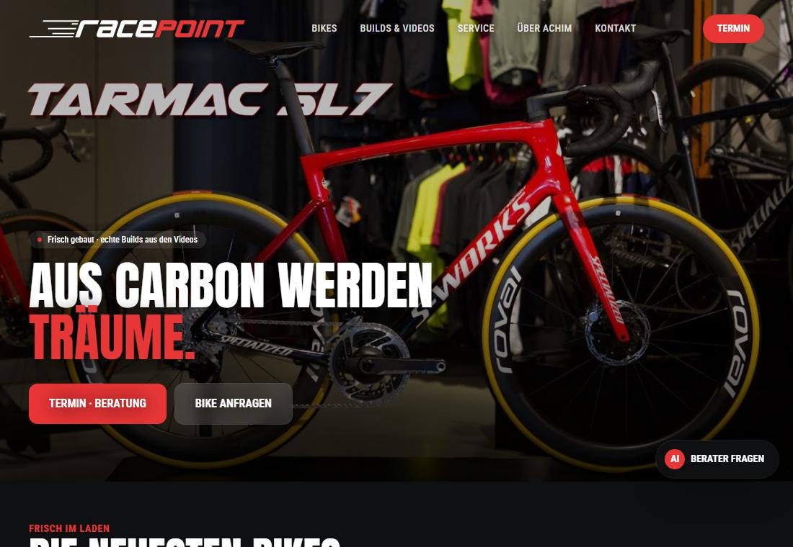
Ein Videoeinstieg und große Bike-Slider zum Entdecken.
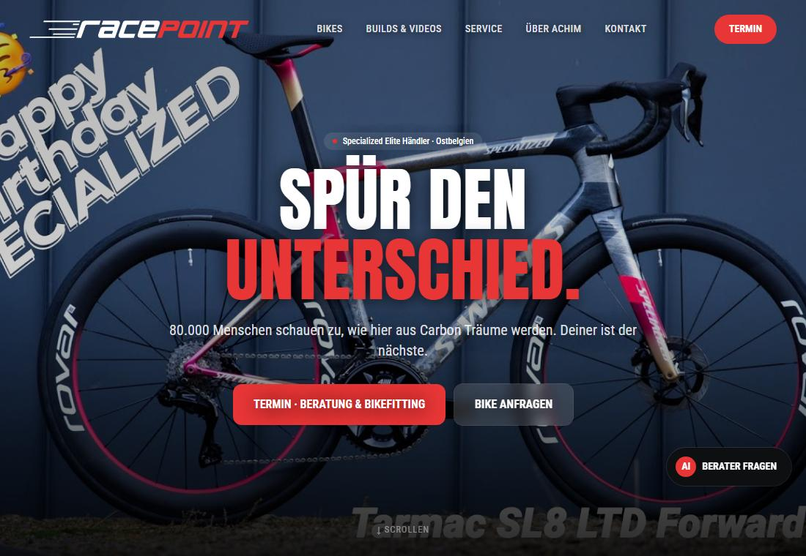
Vollbild-Fotografie und kurze Geschichten über das Radfahren.
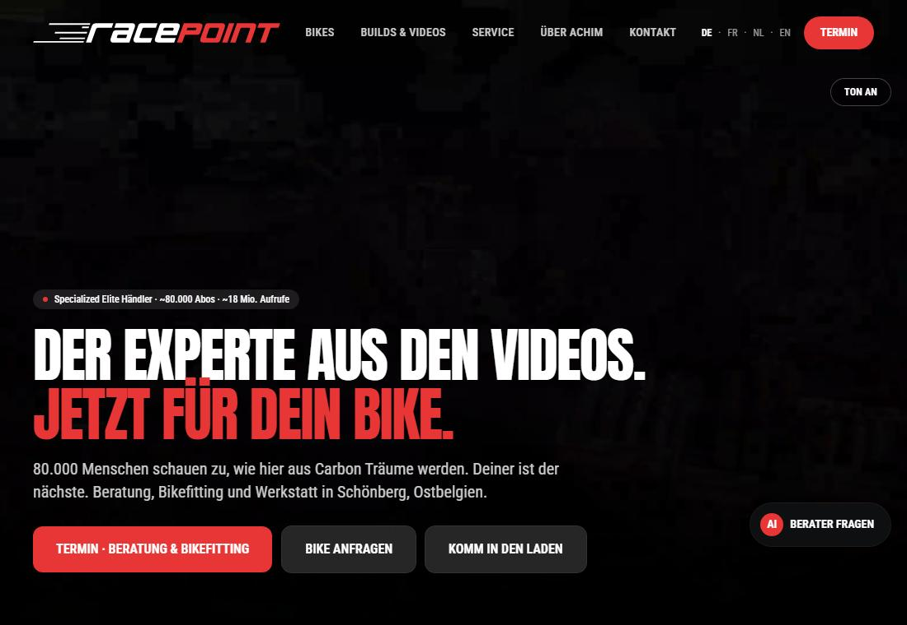
Filmischer Einstieg mit Achims Bildern, Videos und persönlicher Beratung.